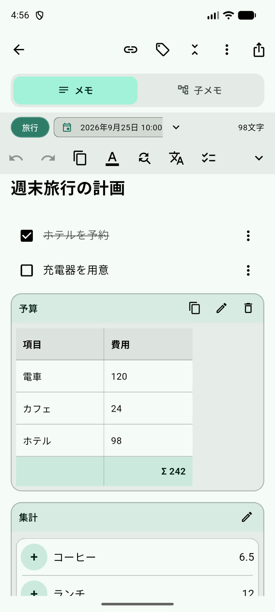
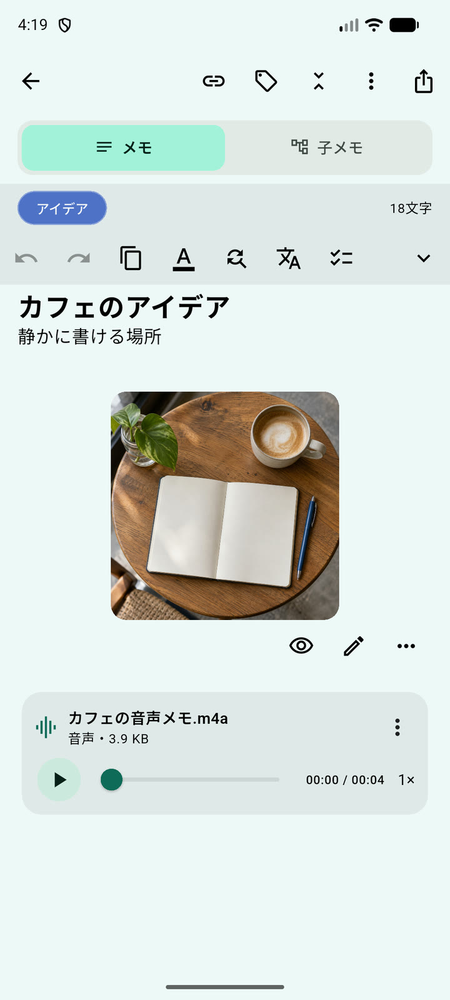
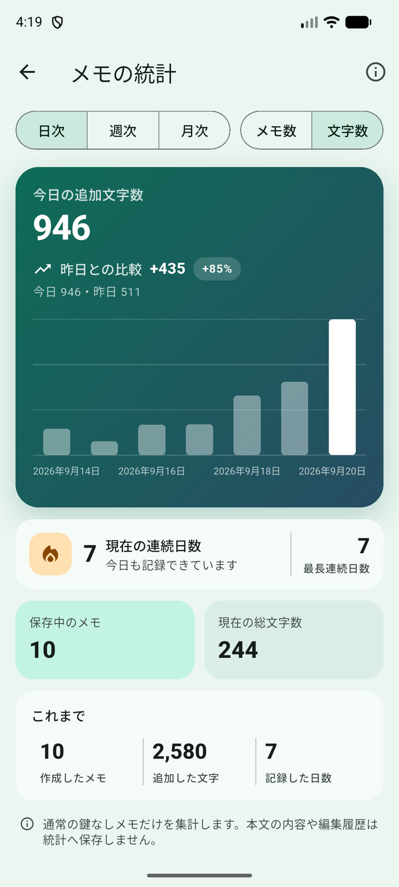
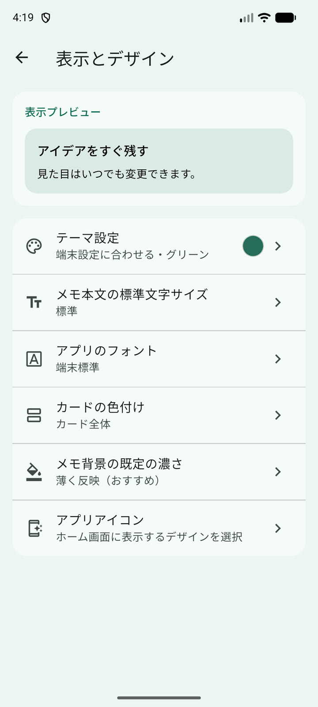
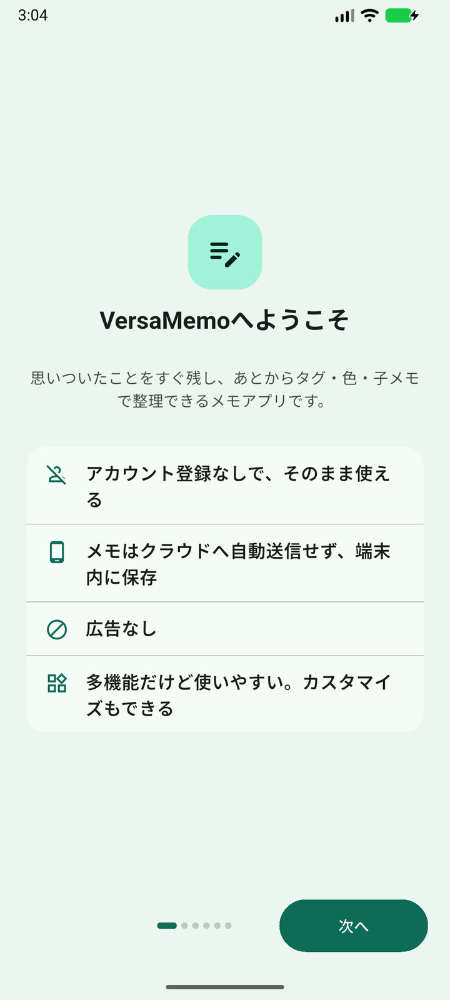
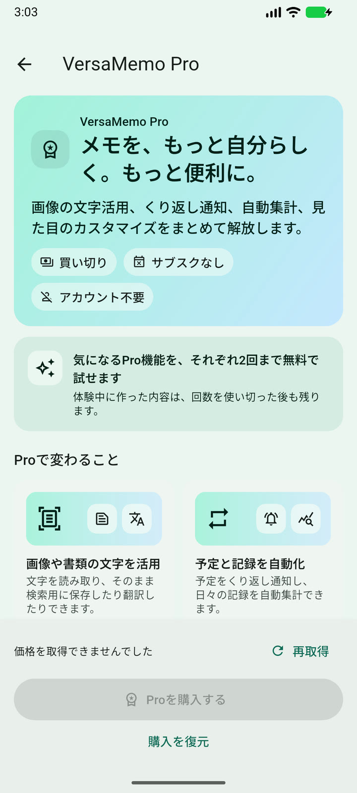

日記やライフログを続けたい
文章から気軽に始め、写真や音声も一緒に残す。記録日数や連続日数も振り返れます。

こんな人におすすめ
日記には文章、勉強には画像、仕事には階層、予定にはカレンダー。VersaMemoなら、ひとつのアプリを使い方に合わせて変えられます。
文章から気軽に始め、写真や音声も一緒に残す。記録日数や連続日数も振り返れます。
資料、読書メモ、会議記録を、タグや最大3階層の親子メモで整理できます。
チェックリスト、予定、タイマー、集計を、関連する文章と離さず記録できます。
画像、手書き、ボイスメモを文章と同じメモに置き、話題ごとにまとめて見返せます。
実際の画面で見るVersaMemo
全部を使う必要はありません。まず書いて、必要になった機能だけを自然に足せます。
文章、チェックリスト、表、画像、手書き、PDF・テキストファイル、ボイスメモを、話題ごとにひとつの場所へ。タイマーや集計結果も文脈と一緒に残せます。

最大3階層の親子メモで、増えた情報のまとまりを保てます。一覧・カード・カレンダーを切り替え、タグ、色、予定、関連メモ、複数条件の検索で必要な記録へ。
記録日数、文字数、現在・最長の連続日数を端末内で振り返れます。

テーマ、フォント、カード、壁紙、本文色、アプリアイコンまで選べます。

記録したあとも、メモの中で
画像から文字を取り出す。選んだ文章を翻訳する。録音を文字にする。必要な機能だけを、メモから直接使えます。
写真に写った文字を端末上で読み取り、確認してから本文や検索に使えます。
必要な言語モデルを入れたあと、選択範囲を端末上で翻訳できます。
対応するiPhoneでは、保存したボイスメモを端末内で編集できる文章へ変換できます。
共有された内容を確認して保存。メモは用途に合う形式で書き出せます。

アカウントなしで始められる
VersaMemo専用アカウントは不要です。メモと添付ファイルは初期状態で端末内へ保存され、作成・編集・検索はオフラインでも使えます。
アプリ・メモロックは画面へのアクセスを制限する機能で、保存データそのものを暗号化するものではありません。端末内バックアップはアプリ削除時に失われる場合があるため、端末外へ残す場合はZIPを書き出してください。
データの扱いを詳しく見るVersaMemoPRO
プレミアム機能・買い切り基本のメモ機能は無料です。対象のPro機能は区分ごとに2回まで体験し、自分に必要だとわかってから、利用しているOSのストアで買い切り購入できます。

知っておきたいこと
はい。メモの作成・編集・検索・端末内バックアップの利用に、VersaMemo専用アカウントは必要ありません。
はい。まずは通常の文章をすぐに書けます。カード、階層、タイマー、画像、計算などは最初から必須ではなく、必要になったときだけ追加できます。
現在は対応していません。メモは端末内へ保存し、端末内バックアップや持ち出せるZIPを書き出せます。iCloud Drive・Google Driveへの直接自動バックアップと複数端末同期は初回リリースの対象外です。
基本のメモ機能は無料です。一部の高度なカスタマイズ、画像、文字読み取り、翻訳、繰り返し通知、関連メモ、記録・計算機能には、区分ごとの無料体験とVersaMemo Proがあります。
いいえ。アプリロックとメモロックはVersaMemo内でのアクセスを制限しますが、データベース、添付ファイル、書き出したファイル、ホーム画面ウィジェットの内容を暗号化するものではありません。
サポートページでよくある質問とメール窓口を確認できます。問い合わせ時にメモ本文が自動で含まれることはありません。
App Store・Google Playで配信準備中
各ストアへのリンクはページ上部に用意しています。公開後、そのままダウンロードできます。